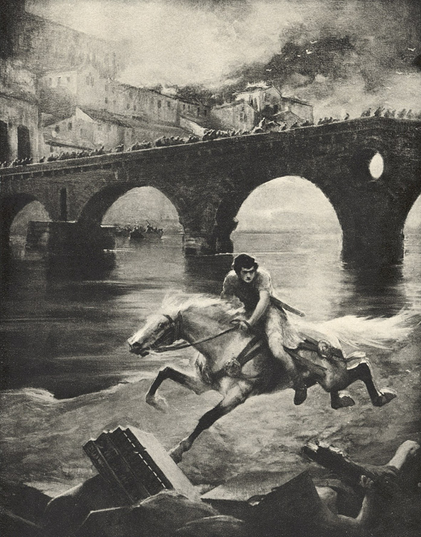

XLIII
Dle toho, jak se Vinitius blížil ke hradbám, ukazovalo se, že bylo snazší k Římu přijeti nežli dostati se do středu města. Po cestě Appiově bylo těžko se prodrati pro přílišný nával lidí. Domy, pole, hřbitovy, zahrady i chrámy, stojící po obou jejích stranách, byly proměněny v tábory. Ve chrámu Martově, stojícím hned vedle Porta Appia, vypáčil dav dveře, aby v jeho vnitřku nalezl útočiště na noc. Na hřbitovech byly obsazovány větší hrobky a sváděny o ně boje, které se končily krveprolitím. Ustrinum se svým nepořádkem poskytovalo sotva slabého nástinu toho, co se dělo u zdí samého města. Přestal jakýkoliv ohled k vážnosti zákona, k úřadu, k rodinným svazkům, ke stavovským rozdílům. Bylo viděti otroky, jak holemi mlátí do občanů. Gladiátoři, zpití vínem, ukradeným v Emporiu, srotivše se ve větší tlupy, probíhali s divokým křikem po prostranstvích u cesty, rozhánějíce lidi, šlapajíce po nich a loupíce. Množství barbarů, určených na prodej v městě, prchalo z prodejních bud na všecky strany. Požár a zkáza města byly pro ně zároveň koncem otroctví a hodinou pomsty; proto také, když usedlé obyvatelstvo, které přicházelo ohněm o všecko jmění, vztahovalo zoufale ruce k bohům, volajíc o pomoc, oni s radostným řevem vrhali se na davy, strhujíce lidem šat z těla a odvlékajíce mladší ženy. K nim se přidávali otroci, kteří již dávno sloužili v Římě, ubožáci, kteří neměli ničeho na sobě kromě vlněného pásu kolem kyčlí, strašlivé postavy z temných zákoutí, které ve dne skoro nikdy nebyly vídány na ulicích a o nichž těžko bylo se domysliti, že v Římě vůbec žijí. Ten dav, skládající se z Asiatů, Afričanů, Řeků, Thráků, Germánů a Britů, vřískající všemi jazyky země, divoký a rozkacený, řádil, domnívaje se, že nadešla chvíle, ve které si smí vynahraditi léta utrpení a bídy. Uprostřed oné zvířené spousty lidské, v záři dne i požárů, kmitaly se přílby praetoriánů, pod jejichž ochranu se utíkalo klidnější obyvatelstvo a kteří na mnohých místech rozhodujícím bojem musili udeřiti na rozběsněnou chátru. Vinitius viděl ve svém životě dobývaná města, ale nikdy se jeho oči nedívaly na obraz, v němž by zoufalství, slzy, bolest, bědování, divoká radost, zběsilost, vztek a zvířeckost splývaly v tak nesmírný, zmatený vír. A nad tím vlnícím se, nepříčetným, tísnícím se davem lidským hořelo na pahorcích největší město na světě, chrlíc do toho zmatku svůj ohnivý dech a zahalujíc jej dýmy, nad nimiž nebylo již viděti blankytu nebe. Mladý tribun s největším úsilím, přes tu chvíli vydávaje život v nebezpečí, dorazil konečně ke bráně Appiově, ale tu zpozoroval, že skrze čtvrt Porta Capena nebude se moci dostati do města nejen pro tlačenici nýbrž i pro strašlivý žár, jímž se hned za branou zachvíval všecek vzduch. Kromě toho most u Porta Trigenia proti chrámu Bonae Deae1 ještě tu nebyl; chtěje tudíž se dostati přes Tiber, musil by proniknouti až k mostu Sublitiově, to jest projeti mimo Aventin skrze část města, jež byla zalita jedním mořem plamenů. To bylo holou nemožností. Vinitius pochopil, že se musí vrátiti směrem k Ustrinu, tam odbočiti z cesty Appiovy, přepraviti se přes řeku níže od města a dostati se na Via Portuensis, která vedla přímo na Zatibří. Ani to nebylo snadno pro shon, jenž zavládl na cestě Appiově a byl stále větší. Bylo nutno raziti si cestu tam třebas i mečem. Vinitius však zbraně neměl, neboť vyjel z Antia tak, jak jej zpráva o požáru zastihla v letohrádku Caesarově. Ale u Zdroje Merkurova spatřil známého centuriona praetoriánů, jenž v čele několika desítek lidí bránil v přístupu na území chrámu, a tomu uložil, aby jel za ním; ten pak, poznav tribuna a Augustiana, neodvažoval se vzepříti se rozkazu.
Vinitius převzal sám velení nad oddílem, a zapomněv v této chvíli na učení Pavlovo o lásce k bližnímu, bušil do davu a rozrážel jej před sebou se spěchem, jenž byl zhoubný mnohým, kdož se včas nedovedli uhnouti. Letěly za nimi kletby a příval kamení, ale on toho nedbal, snaže se, aby se co nejdříve dostal na místo volnější. Nicméně bylo možno postupovati kupředu jen s největší námahou. Lidé, kteří se již utábořili, nechtěli ustoupiti vojákům z cesty, proklínajíce Caesara i praetoriány. Na některých místech nabýval dav hrozivé tvářnosti. Ke sluchu Vinitiovu dolétaly hlasy, obviňující Nerona, že zapálil město. Zjevně bylo vyhrožováno smrtí i jemu i Poppaei. Výkřiky: „Sannio!“– „Histrio!“2 – „Vrah matčin!“ – rozléhaly se kolem. Někteří volali, aby byl zavlečen k Tibru, jiní zase, že Řím projevil dosti trpělivosti. Bylo patrno, že ty hrozby se mohou změniti ve zjevné vzbouření, které, jen když by se našel vůdce, může propuknouti každým okamžikem. Zatím vzteklost a zoufalství davu obracely se proti praetoriánům, kteří také ještě proto se nemohli vyprostiti z tlačenice, že cesta byla zatarasena hromadami věcí, vynesených narychlo z požáru: skříněmi, sudy, v nichž byly potraviny, cennějšími kusy nábytku, náčiním, dětskými kolébkami, ložními potřebami, vozy a nosítky. Tu a tam docházelo ke srážkám, ale praetoriáni byli s bezradnou chátrou brzy hotovi. Projev s námahou napříč přes cestu Latinskou, Numidskou, Ardejskou, Luvinijskou a Ostijskou, objížděje letohrádky, zahrady, hřbitovy a chrámy, Vinitius konečně dorazil do městečka zvaného Vicus Alexandri, za nímž se přepravil přes Tiber. Bylo tam již volněji a méně kouře. Od uprchlíků, jichž ani zde nechybělo, zvěděl, že pouze některé postranní uličky byly zachváceny požárem, ale jistě nic neobstojí před dravostí ohně, protože jsou lidé, kteří jej zúmyslně zakládají a nedovolují, aby byl hašen, rozkřikujíce, že činí tak z rozkazu. Mladý tribun neměl již nejmenší pochybnosti, že Caesar opravdu dal zapáliti Řím, a pomsta, o jakou volaly davy, připadala mu čímsi oprávněným a spravedlivým. Co více mohl učiniti Mitridates3 nebo kterýkoli z nejzavilejších nepřátel Říma? Míra byla dovršena, běsnění se stalo příliš hrozným a lidský život proti němu příliš nemožným. Také Vinitius věřil, že hodina Neronova udeřila, že ty trosky, ve které se rozpadává město, měly by a musí povaliti ohavného šaška i s jeho všemi zločiny. Kdyby se našel muž dosti odvážný, aby se postavil v čelo zoufalého obyvatelstva, mohlo by se to státi v několika hodinách. Tu začaly smělé a mstivé myšlenky proletovati hlavou Vinitiovou. Což kdyby tak učinil on? Dům Vinitiův, který až do posledních dob vydal celé řady konsulů, byl znám po celém Římě. Davy by jen potřebovaly jména. Vždyť již jednou, když bylo odsouzeno k smrti čtyři sta otroků Pedania Secunda, div nedošlo ke vzbouření a domácí válce. Co by se tedy stalo dnes, při takové strašlivé pohromě, která překonávala skoro všecky, jakých Řím zažil v osmi stoletích? Kdo vyzve do zbraně Quirity (uvažoval Vinitius), ten určitě povalí Nerona a sám se oděje nachem! Nuže, proč neměl by tak učiniti on? Byl statnější, horlivější a mladší nežli jiní Augustiani… Nero sice rozkazoval třiceti legiím, ležícím na hranicích říše, ale zdaž ani tyto legie i jejich velitelé se nevzbouří při zprávě o vyhoření Říma a jeho chrámů…? A v té případnosti on, Vinitius, mohl by se státi Caesarem. Vždyť se šeptalo mezi Augustiany, že jakýsi věštec předpověděl Othovi nachové roucho. V čem jest on horší? Snad i Kristus by mu přispěl svou božskou mocí, snad je to Jeho vnuknutí? „Kéž by tomu tak bylo!“ volal v duchu Vinitius. Pak by se pomstil na Neronovi za nebezpečí pro Lygii i za svůj nepokoj, zavedl by vládu spravedlnosti a pravdy, rozšířil by nauku Kristovu od Eufratu až k mlživým břehům Británie a zároveň by purpurem ozdobil Lygii a učinil ji panovnicí země.
Ale ty myšlenky, vyšlehnuvše z jeho hlavy jako sloup jisker z hořícího domu, zhasly jako jiskry. Především bylo nutno zachrániti Lygii. Díval se nyní na pohromu zblízka, a proto jej úděs jal nanovo a před tímto mořem ohně a dýmu, před stykem se strašlivou skutečností, ona důvěra, s jakou věřil, že apoštol Petr zachrání Lygii, v jeho srdci odumřela úplně. Zoufalství se ho zmocnilo po druhé, a tak prodrav se na Via Portuensis, vedoucí přímo na Zatibří, nevzpamatoval se až ve bráně, u které bylo mu opakováno to, co dříve říkali uprchlíci, že většina té čtvrti nebyla ještě zachvácena požárem, ačkoli se oheň již na několika místech přenesl přes řeku.
Nicméně i Zatibří bylo plno kouře a prchajících davů, skrze něž bylo obtížněji proniknouti hloub, protože lidé, majíce více kdy, vynášeli a zachraňovali více předmětů. Sama hlavní cesta Přístavní byla na mnohých místech jimi úplně zatarasena a u Naumachie4 Augustovy trčely jich celé hromady. Těsnější uličky, ve kterých se dýmy nakupily hustěji, byly prostě nepřístupny. Obyvatelé prchali z nich po tisících. Vinitius viděl cestou děsné výjevy. Nejednou dvě lidské řeky, tekoucí z opačných stran, setkavše se v těsném přechodu, tísnily se navzájem a bojovaly mezi sebou na život i na smrt. Lidé zápasili s sebou a šlapali druh po druhu. Rodiny se ztrácely ve zmatku, matky zoufale volaly po dětech. Vinitiovi se ježily vlasy při myšlence, co se asi dělo blíže ohně. Ve vřavě a shonu bylo těžko vyptávati se na něco nebo rozuměti výkřikům. Chvílemi se od řeky přihnaly nové kotouče černých a tak těžkých dýmů, že se válely těsně u země, zahalujíce takto domy, lidi a všecky předměty, jako je zahaluje noc. Ale vítr, vyvolaný požárem, je rozptyloval, a tehdy Vinitius mohl postupovati dále k postranní uličce, ve které stál dům Linův. Vedro červencového dne stupňované žárem, sálajícím od hořících městských čtvrtí, stalo se nesnesitelné. Kouř štípal do očí, v prsou se tajil dech. Dokonce i ti obyvatelé, kteří v naději, že se plamen přes řeku nedostane, zůstali až dosud v domech, začali je opouštěti a tlačenice se vzmáhala každou hodinu. Praetoriáni, provázející Vinitia, zůstali pozadu. V tlačenici zranil kdosi jeho koně, který začal házeti zkrvácenou hlavou, vzpínati se a odpírati jezdci poslušnost. Také byl poznán bohatý Augustian po tunice a ihned se ozvaly kolem výkřiky: „Smrt Neronovi a jeho žhářům!“ Nadešel okamžik hrozného nebezpečí, poněvadž sta rukou napřáhla se proti Vinitiovi, ale polekaný kůň jej odnesl, šlapaje po lidech, a současně se přihnala nová vlna černého kouře a pohroužila ulici ve tmu. Vinitius vida, že neprojede, seskočil konečně na zemi a začal běžeti pěšky, prokrádaje se mimo zdi a čekaje chvílemi, až jej prchající dav mine. V duchu si říkal, že je to marné úsilí. Lygie snad nebyla již ani ve městě, mohla se v této chvíli zachrániti útěkem; snazší bylo najíti špendlík na břehu moře nežli ji v tom shonu a zmatku. Chtěl však třebas i za cenu života proniknouti k domu Linovu. Chvílemi se zastavoval a mnul si oči. Utrhnuv okraj tuniky, uvázal si jej přes nos i ústa a běžel dále. Dle toho, jak se blížil k řece, vedro se strašlivě vzmáhalo. Vinitius věda, že požár vypukl u Velikého cirku, soudil z počátku, že žár sálá od jeho spáleniště, jakož i od Forum Boarium a Velabrum, kteráž Fora, ležíce nablízku, jistě byla zachvácena plamenem. Ale horko se stávalo nesnesitelným. Kdosi prchající, poslední, jejž Vinitius zahlédl, vzkřikl: „Nepřibližuj se k mostu Cestiovu5! Celý ostrov jest v ohni!“ Opravdu, déle nebylo možno se klamati! Na zatáčce k Vicus Judaeorum, na němž stál dům Linův, spatřil mladý tribun ve mračnech kouře plamen: hořel nejen ostrov, nýbrž i Zatibří, aspoň druhý konec uličky, ve které bydlila Lygie.
Vinitius však se pamatoval, že Linův dům byl obklopen zahradou, za kterou směrem od Tibru bylo nepříliš rozlehlé, nezastavěné pole. Ta myšlenka mu dodala útěchy. Oheň se mohl zastaviti na prázdném místě. V té naději běžel dále, jakkoli každý závan přinášel již nejen dýmy, nýbrž i tisíce jisker, které mohly vznítiti požár na druhém konci uličky a návrat odříznouti.

Vinitius viděl cestou děsné výjevy.
Konečně však spatřil skrze kouřovou clonu cypřiše v zahradě Linově. Domy, stojící za nezastavěným polem, již hořely jako hranice dříví, ale malá „insula“ Linova stála ještě netknuta. Vinitius vděčně pohlédl k nebi a chvátal k ní, ačkoli sám vzduch začal jej páliti. Dveře byly zamčeny, ale on do nich vrazil a vřítil se dovnitř.
V zahrádce nebylo živé duše a dům, jak se zdálo, rovněž úplně prázdný.
„Snad jsou omámeni kouřem a žárem,“ napadlo Vinitia.
I začal volati:
„Lygie! Lygie!“
Odpovědělo mu ticho. V něm bylo slyšeti jen hučení vzdáleného ohně.
„Lygie!“
Pojednou dolétl k jeho sluchu onen příšerný řev, jejž slyšel již jednou v té zahrádce. Na blízkém ostrově začalo nejspíše hořeti vivarium, které stálo nedaleko chrámu Aeskulapova6 a v němž zvířata všeho druhu, mezi nimi i lvi, začala řváti zděšením. Vinitiem proběhla hrůza od paty k hlavě. Hle, to již po druhé, v okamžiku, kdy všecka jeho bytost byla upjata k Lygii, ozývaly se ty strašlivé hlasy jako předzvěst neštěstí, jako podivná věštba zlomyslného osudu!
Byl to však jen krátký, okamžitý dojem, protože hučení požáru, ještě strašlivější nežli řev divokých zvířat, přikazovalo mysliti na něco jiného. Lygie arci neodpověděla na volání, ale mohla býti v tom ohroženém stavení buď ve mdlobách, nebo zadušena kouřem. Vinitius vskočil do vnitřku domu.
V malém atriu bylo prázdno a od kouře tmavo. Hledaje rukama dveře, vedoucí do cubiculí, zahlédl kmitající se plamének lampičky a přiblíživ se, spatřil lararium, ve kterém byl místo lárů kříž. Pod tím křížem hořel kahanec. Hlavou mladého katechumena7 proletěla rychlostí blesku myšlenka, že ten kříž mu sesílá ono světélko, u něhož může najíti Lygii, a proto uchopil kahanec a začal hledati cubicula. Naleznuv jedno, odhrnul závěs a svítě si kahaneem, začal se rozhlížeti.
Ale ani zde nebylo nikoho. Nicméně Vinitius byl jist, že vešel do cubicula Lygiina, jelikož na hřebících, přibitých do stěny, visel její šat, na loži pak leželo „capitium“, to jest přiléhavé roucho, které nosívaly ženy přímo na těle. Vinitius je popadl, přitiskl ke rtům a přehodiv si je přes ruku, vydal se na další pátrání. Domek byl malý, a tak prohledal za krátkou dobu všecky jizby, ano, i sklep. Ale nikde nenašel živé duše. Bylo až příliš jasno, že Lygie, Linus i Ursus společně s ostatními obyvateli čtvrti hledali asi v útěku spásu před požárem. „Je nutno hledati je mezi davem, za branami města!“ napadlo Vinitia.
Nebyl ani příliš udiven, že jich nepotkal na Via Portuensis, neboť mohli odejíti ze Zatibří ze strany opačné, směrem od pahorku vatikánského. Buď tomu jakkoli, zachránili se, aspoň před ohněm. Vinitiovi spadl kámen s prsou. Viděl sice, s jak strašlivým nebezpečím byl spojen útěk, ale myšlenka na nadlidskou sílu Ursovu dodávala mu útěchy. „Nyní musím odtud prchnouti,“ řekl si, „a přes zahrady Domicie8 dostati se do zahrad Agrippových. Tam je najdu. Tam nejsou strašlivé dýmy, protože vítr duje od hor sabinských.“
Byl však již svrchovaný čas, kdy musil pomýšleti na vlastní záchranu, poněvadž ohnivá vlna přitékala stále blíže směrem od ostrova a kotouče kouře zahalily uličku téměř úplně. Kahanec, jímž sobě svítil po domě, zhasl průvanem. Vinitius, vyběhnuv na ulici, uháněl nyní, co dech stačil, k Via Portuensis, v touž stranu, od které přišel, a požár, jak se zdálo, jej pronásledoval svým ohnivým dechem, tu jej zahaluje stále novými mračny kouře, tu zasypávaje jiskrami, které mu padaly na vlasy, na krk i oblek. Tunika začala na něm doutnati na několika místech, ale on toho nedbal a běžel dále, obávaje se, aby ho dým nezadusil. Opravdu, v ústech měl příchuť spáleniny a sazí, hrdlo i plíce jej pálily jako oheň. Krev se mu hrnula do hlavy tak, že chvílemi viděl všecko rudé a dýmy samy připadaly mu rovněž rudé. Tehdy si řekl v duchu: „Toť živý oheň! Lépe pro mne, vrhnu-li se na zemi a zahynu!“ Běh jej unavoval čím dále tím více. Hlava, krk i záda se mu zalévaly potem a ten pot jej pařil jako horká voda. Kdyby nebylo jména Lygiina, které si opakoval v mysli, a kdyby nebylo jejího „capitia“, kterým si ovinul ústa, byl by klesl. Za několik okamžiků potom však již přece jen nemohl rozeznati uličku, kterou běžel. Postupně jej opouštělo jasné vědomí a jen si pamatoval, že musí prchati, poněvadž na otevřeném poli čeká na něho Lygie, kterou mu slíbil apoštol Petr. A pojednou se ho zmocnila jakási zvláštní, zpola již horečnatá, předsmrtnému přeludu se podobající jistota, že ji musí spatřiti, pojmouti za choť, a pak hned že zemře.
Nicméně utíkal již jako opilý, potáceje se z jedné strany ulice na druhou. Ale vtom se cosi změnilo v příšerném ohni, zachvátivším celé město. Všecko, co dosud ještě jen doutnalo, vyšlehlo zjevně jako jedno moře plamenů, protože vítr přestal zanášeti kouř, ten pak, jenž se nahromadil v postranních uličkách, byl rozvát šíleným proudem rozžhaveného vzduchu. Ten proud hnal nyní miliony jisker, takže Vinitius utíkal jako v ohnivém mraku. Zato však mohl viděti lépe před sebe a skoro ve chvíli, kdy již již padal, uzřel konec uličky. Ten pohled mu dodal nové opět síly. Minuv nároží, octl se v ulici, která vedla k Via Portuensis a poli Codetanskému. Jiskry jej přestaly pronásledovati. Pochopil, že podaří-li se mu doběhnouti ke Přístavní cestě, bude zachráněn, i kdyby snad podlehl mdlobám.
Na konci ulice spatřil opět cosi jako mračno, které zahalovalo východ. „Jsou-li to dýmy,“ napadlo jej, „pak již neprojdu.“ Běžel v posledním napětí sil. Cestou shodil se sebe tuniku, která doutnajíc od jisker, začala jej páliti jako Nessova9 košile i letěl nahý, maje pouze na hlavě a na ústech Lygiino „capitium“. Doběhnuv blíže, rozeznal, že to, co pokládal za kouř, bylo prachem, ze kterého, aby neštěstí bylo dovršeno, dolétaly hlasy a lidské výkřiky.
„Luza plení domy!“ řekl si.
Ale utíkal směrem podle hlasů. Byli tam přece jen lidé, kteří mu mohli přispěti ku pomoci. V té naději, ještě nežli doběhl, začal volati všemi silami hlasu o pomoc. Než bylo to jeho krajní napětí: před očima mu všecko ještě více zrudlo, v prsou se zatajil dech, v kostech nebylo sil – i klesl.
Nicméně lidé jej zaslechli či vlastně zahlédli a dva lidé mu kvapili na pomoc se džbery, plnými vody. Vinitius, který padl vysílením, ale nepozbyl vědomí, popadl nádobu oběma rukama a vyprázdnil ji do poloviny.
„Díky!“ řekl. „Postavte mne na nohy, půjdu dále sám!“
Druhý pracovník mu polil hlavu vodou, oba pak nejen jej postavili na nohy, nýbrž zvedli ze země a odnesli ke hloučku ostatních, kteří jej obstoupili v kruhu, starostlivě se dotazujíce, nebyl-li snad vážně ohrožen na zdraví. Ta starostlivost Vinitia překvapila.
„Lidé,“ ptal se, „kdo jste vlastně?“
„Bouráme domy, aby se požár nemohl dostati ke Přístavní cestě,“ odpověděl jeden z pracovníků.
„Přispěli jste mi ku pomoci, když jsem již padl. Díky vám!“
„Nesmíme odmítnouti pomoc,“ ozvalo se několik hlasů.
Tehdy Vinitius, který se dříve od rána díval na rozzuřené davy, na rvačky a drancování, pohlédl pozorněji na tváře, které jej obklopovaly, a řekl:
„Kéž vám to odplatí – Kristus!“
„Sláva Jeho jménu!“ zvolal celý sbor hlasů.
„Linus…?“ ptal se Vinitius.
Ale déle se ptáti nemohl a nezaslechl odpovědi, protože rozčilením a přestálým vysílením omdlel. Přišel k sobě teprve na poli Codetanském, na zahradě, obklopen několika ženami i muži, a první slova, na něž se zmohl, byla:
„Kde je Linus?“
Chvíli nebylo odpovědi, načež jakýsi hlas, Vinitiovi známý, řekl pojednou:
„Za branou Nementskou. Odešel do Ostriana – jsou tomu již dva dni… Pokoj tobě, perský králi!“
Vinitius se nadzvedl a usedl, spatřiv nad sebou znenadání Chilona.
Řek pak mluvil:
„Tvůj dům, pane, jistě vyhořel, protože Cariny jsou v plameni, ale ty budeš stále bohat jako Midas10. Ó, jaké neštěstí! Křesťané, synu Serapidův, předpovídali již dávno, že oheň zničí toto město…! A Linus i s Jovišovou dcerou jest na Ostrianu… Ó, jaké neštěstí pro toto město…!“
Vinitia opět opustily síly.
„Viděl jsi je?“ ptal se.
„Viděl, pane…! Díky buďtež Kristu i všem bohům, že jsem se ti mohl odplatiti šťastnou zprávou za tvá dobrodiní! Ale já se ti, Osirie, ještě odplatím – přísahám při tomto hořícím Římě!“
Venku se snášel večer, ale na zahradě bylo jasno jako ve dne, poněvadž se požár ještě rozmohl. Zdálo se, že hoří již nejen jednotlivé čtvrti, nýbrž celé město, jak bylo dlouhé a široké. Nebe bylo rudé, kam oko dohlédlo, a na světě začala rudnouti noc.
Bona Dea – „dobrá bohyně“, která byla starořímskými ženami uctívána jako bohyně úrody a počestnosti. ↩︎
Šašek, herec. ↩︎
Starověký pontský král z 1. st. př. n. l., nepřítel Římanů. ↩︎
Starověké divadlo, jehož součástí byla velká umělá vodní nádrž, na níž se předváděly vodní bitvy. ↩︎
Římský rytíř z 1. stol. př. n. l. ↩︎
Bůh lékařství. ↩︎
Učeň v náboženství, který se připravoval na přijetí křestu. ↩︎
Vznešená Římanka, která byla roku 54 n. l. zavražděna na popud Neronovy matky Agrippiny. ↩︎
V řeckém bájesloví kentaur, kterého Herakles smrtelně zranil šípem. ↩︎
Podle řeckého bájesloví fryžský král, který byl od boha Dionýsa nadán zázračnou mocí, že vše, čeho se dotkl, se proměnilo ve zlato. ↩︎